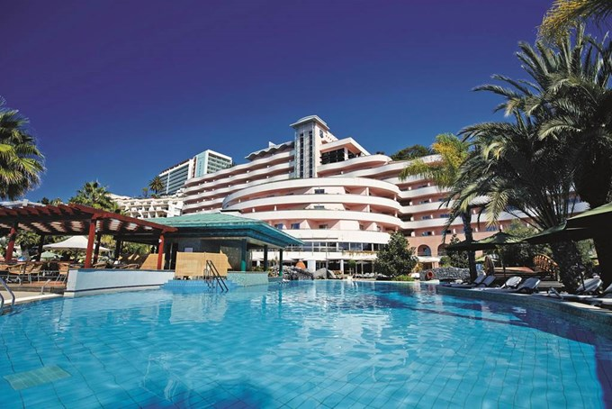
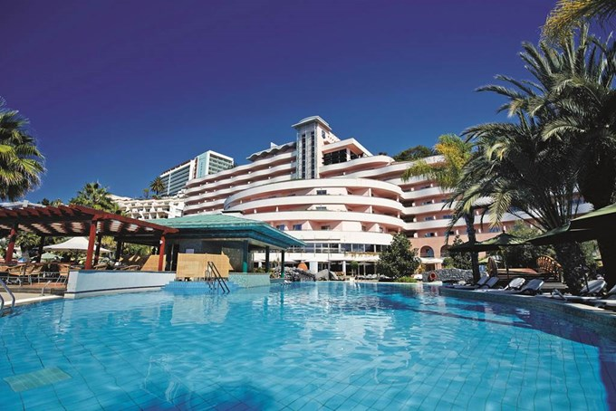

Savoy Resort and Spa also offers many facilities to enrich your stay in Seychelles Islands. To name a few of the hotel's facilities, there are 24-hour room service, free Wi-Fi in all rooms, 24-hour security, daily housekeeping, gift/souvenir shop.Guests can choose from 163 rooms, all of which exude an atmosphere of total peace and harmony.The hotels boats, hiking trails, fitness center, sauna, outdoor pool are ideal places to relax and unwind after a busy day. Savoy Resort and Spa is a smart choice for travelers to Seychelles Islands, offering a relaxed and hassle-free stay every time. .
Savoy Resort & Spa is a 5* beach resort. The new Savoy Resort & Spa is located on Beau Vallon Beach, Seychelles. The resort offers a total of 160 luxurious rooms and suites. The Savoy Resort & Spa is the unique trend setter in Seychelles hospitality, providing exceptional opportunities that craft delightful and memorable experiences. Savoy Resort & Spa offers personalized services with local elements.
Rating:
Beau VallonMahe Island
Seychelles
Nearest Airport: Seychelles International
Price: £3500 per person(Includes Accomodation)
Services within the package:
Private furnished balcony or terrace - 16m²
Air conditioning
Heavenly rain shower
Flat screen TV with international satellite channels/programmes
In-room safe
Mini-bar
Tea and coffee making facilities
Hairdryer
Wi-Fi and LAN internet access
IDD line telephone
Spa
Water Skiing
Scuba Diving
Golf
Three.jpg)
Seven.jpg) 

Standard Suite:
Savoy Standard Suites will comfortably accommodate up to 3 adults or 2 adults and 1 child. The contemporary décor unfolds over 40m², promising a completely luxurious experience. Available in either king size bed or 2 twin bed options, the rooms enjoy a modern bathroom, individually controlled air conditioning and an extensive private furnished balcony or terrace… so you can savour the glorious views over the resort gardens or the Ocean at your leisure!
Large Suite:
Sleeping 3 adults or 2 adults and 1 child, our LargeSuites ooze aesthetic charm. At 60m², this stylish accommodation features a private bathroom and individually controlled air conditioning. For the ultimate in luxury, our suites spill out onto a private furnished balcony or terrace that overlooks the clear blue Ocean.
Deluxe Suite:
Accommodating up to 4 adults or 2 adults and 2 children, our deluxe room is 190m² of sheer luxury. Including two bedrooms, a separate living area and a fully equipped kitchen, polished teak floors add the contemporary feel to this lavish accommodation, while local arts and crafts create a warm and welcoming atmosphere…you’ll be assured of a good night’s sleep when you dive between the finest Egyptian cotton sheets! Other luxury defining features include a Nespresso machine, Molton Brown toiletries and a pair of opulently furnished bathrooms complete with rain showers and bath tubs.
The residential area flows seamlessly onto the private, fully furnished terrace that boasts spectacular views over the Savoy gardens. Complete with a Balinese style daybed and a relaxing hot tub, you could be forgiven for not wanting to venture anywhere else!
Smoking is acceptable on the balcony area.
Save to Favourites